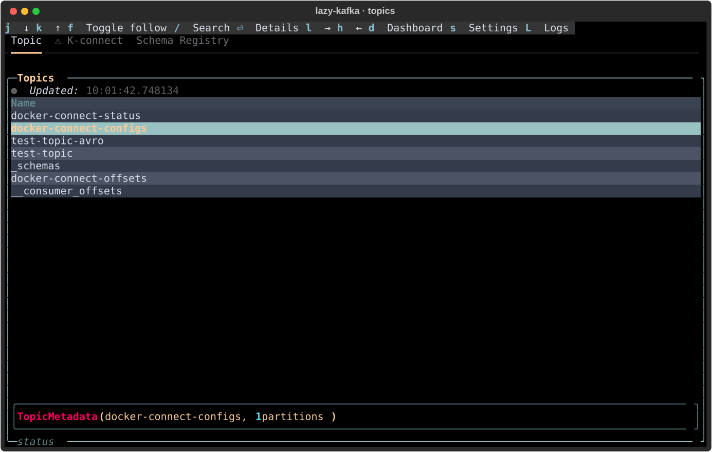
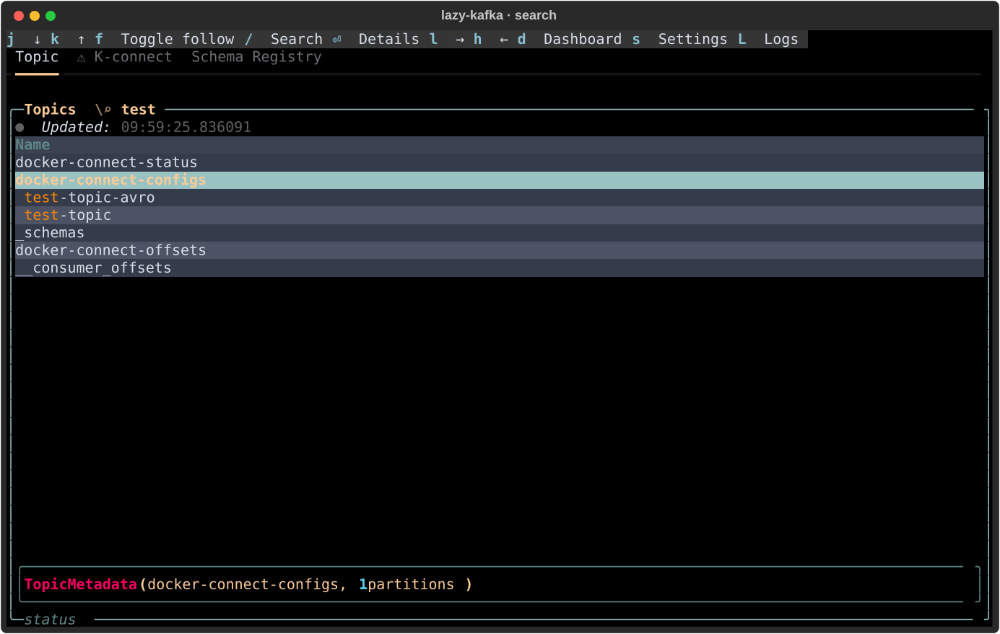
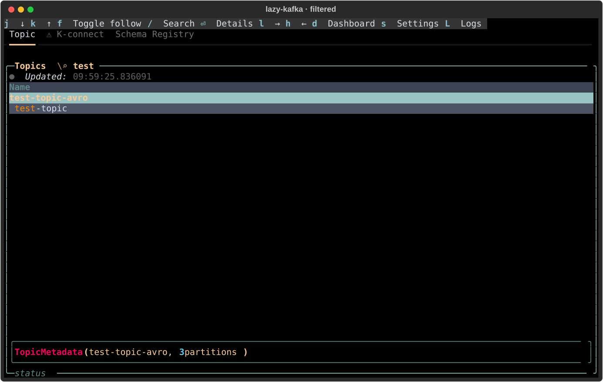
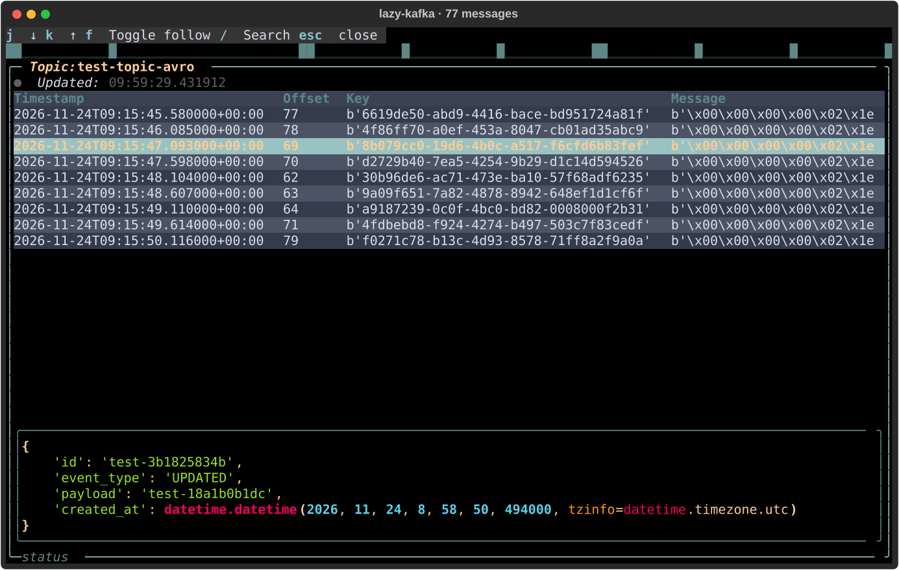
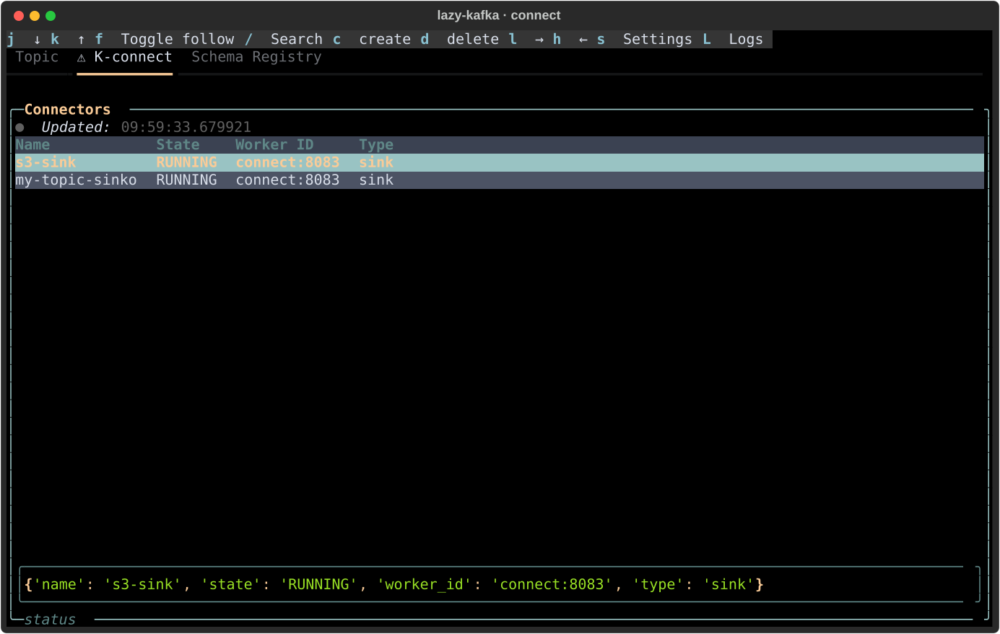
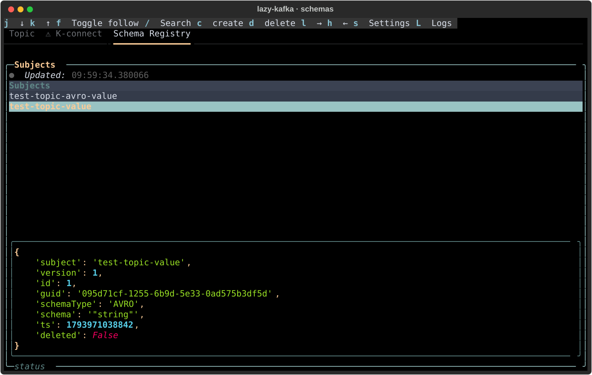
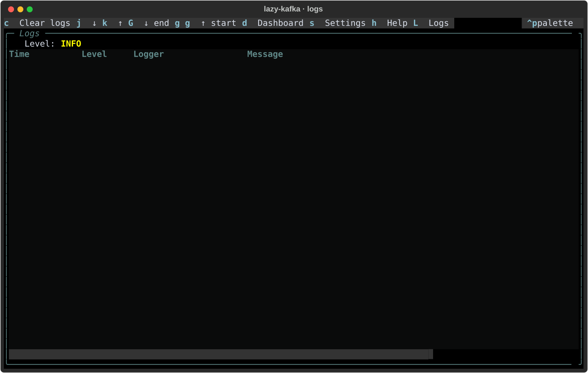

lazy-kafka
a tui to enhance the kafka eco-system devX
install
$ pip install lazy-kafka
$ lazy-kafka # start the tui
$ lazy-kafka # start the tui
features
kafka
- list topics
- topic metadata
- browse message tables (experimental)
- timestamp-distribution sparkline
kafka connect
- list connectors
- connector status
- follow / monitor status
schema registry
- list subjects
- create & delete subjects
- inspect versioned schemas
tui
- persistent in-app logs
- level filtering
- vimming optional, zealotry welcome
screens







keys
| dsLh | dashboard · settings · logs · help modes |
| jk | move down / up in tables |
| G gg | jump to last / first row (follows tail on G) |
| / | search within a table |
| c | clear the log viewer |
| ↑↓ | raise / lower log filtering level |